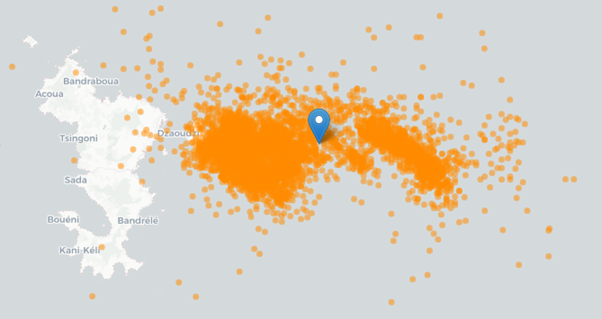
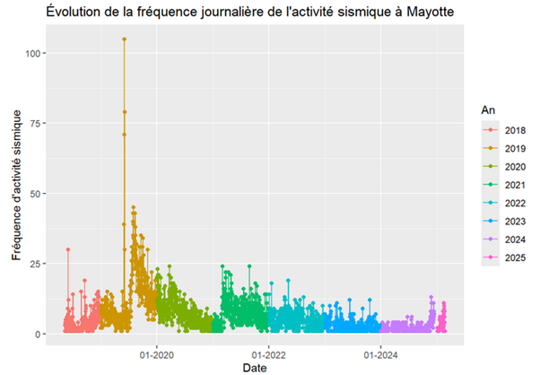
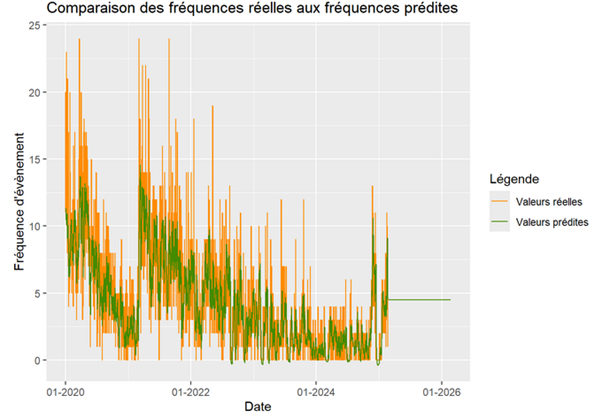

Using time series
The goal of this project was to predict the seismic activity of the Fani Maorè volcano using data recorded between 2018 and 2025. To see how volcano is growing, it was important to understand its activity from several angles: how often events happen, how strong they are, and where they occur. To do this, we had several data sets measuring different variables of the volcano's seismic events: location, magnitude, depth, and date. The tool used for this project was the R programming language.
A first challenge was to check that the data was correct. In total, we had 3 different sources to combine: data from 2018–2019 from a side database given by the client, data from 2019–2024 from a seismic monitoring group in Mayotte (REVOSIMA), and freely available data from 2021–2025 from the IPGP. The data was compared, cleaned, and merged carefully to avoid duplicate entries. New metrics were calculated from this data. A first descriptive study showed that the average magnitude was about 2, with a lot of variation. The average activity level seemed to be going down over the years.
In total, four types of statistical models were used: time series, double exponential smoothing, triple exponential smoothing, and ARIMA. Stationarity tests were used to check if there was any recurring pattern in the data. After setting up the models, various metrics were used to compare them. For predicting how often earthquakes would happen, the ARIMA model gave the best results, with an R² of 57% and an average error of 1.8 earthquakes per day, compared to a daily average of 4.5 earthquakes. The other models could not explain the changes in seismic activity well and gave weak results, except for double exponential smoothing, which had an R² of 53% and an average error of 1.9.
To try to improve this, we splitted the data into two geographic clusters to see if training one model per area would improve the quality of the predictions. In the end, the results got worse, and this method made a majority of the models to underestimate the volcano's seismic activity.
The project was coded in an R Markdown document..
Skills learned:
- Using and understanding time series
- Comparing statistical models and choosing one based on performance metrics
- Writing a report and highlighting results
- Visualization of predicted and real data
- Deepening my knowledge of the R programming language
- Checking the quality and cleaning data from different sources
Illustrations

Map showing the location of the seismic events between 2021-2025

Evolution of the seismic events frequency betwwen 2018-2025

Comparison of the reel data and the predicted data with the model using double exponential smoothing